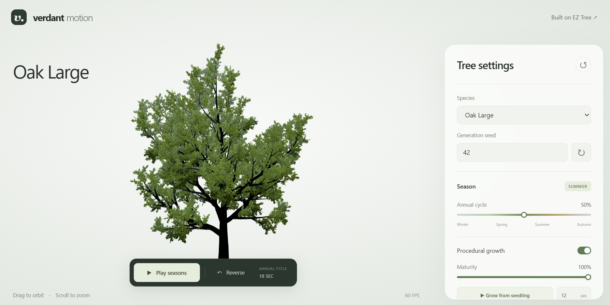
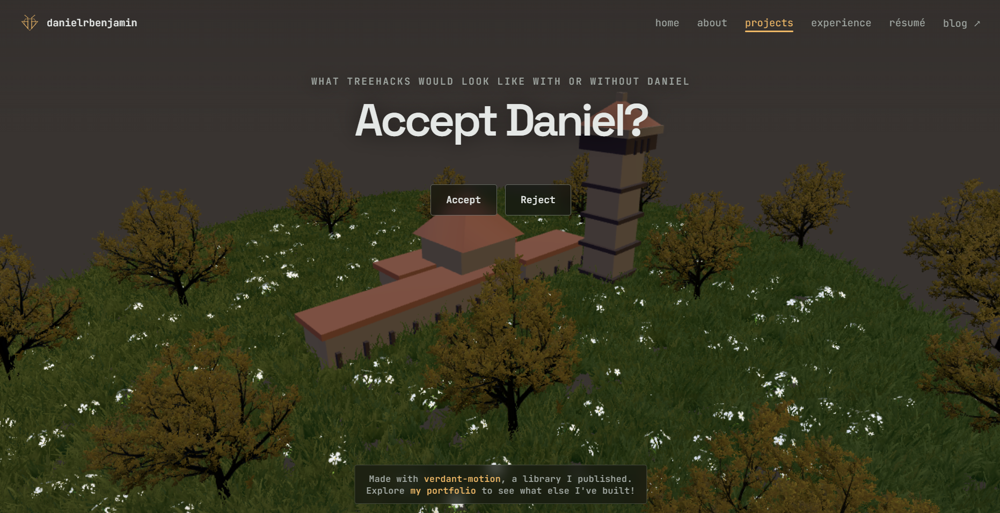

Verdant Motion Animation
A reusable animation library that brings growth, seasons, and motion to procedural vegetation in Three.js.
Project Summary
- A TypeScript vegetation animation library for Three.js.
- Growth, seasonal changes, wind, and falling leaves.
- Built an animation layer around EZ Tree geometry.
- Exposed shared plant state and timeline controls for trees, grass, and flowers.
- Published as verdant-motion on npm, with an interactive demo.
- Integrated into my TreeHacks application page as a working usage example.
Overview
I built Verdant Motion to make procedural vegetation respond to time and interaction. Rather than leaving a generated tree as a static model, the library lets an application control its growth, season, health, and wind through a shared animation interface.
The tree geometry builds on EZ Tree. My work adds the animation layer, plant lifecycle controls, and integration API, with support for trees, grass, and flowers in a Three.js scene.
Animation System
- Procedural growth: develops the tree along its generated skeleton, from young shoots toward the mature shape.
- Seasonal transitions: changes the canopy through the year, with leaves detaching, drifting, and settling.
- Shared plant state: coordinates season, growth, health, and wind across vegetation through the Nature API.
- Playback controls: supports direct state updates, timed animations, and timelines that can pause, reverse, and seek.
Main Demo
The standalone demo lets you explore tree presets, adjust the generation seed, scrub through seasons, and grow a tree from a seedling. Playback and tree settings make it easy to see how the animation controls affect the scene.

TreeHacks Application Page
I used the published package to build my TreeHacks application page: an interactive scene imagining TreeHacks with or without me. The Accept and Reject buttons change the vegetation's season, health, and wind around a model of Stanford's campus, showing how the library can respond to interaction within a larger page.
